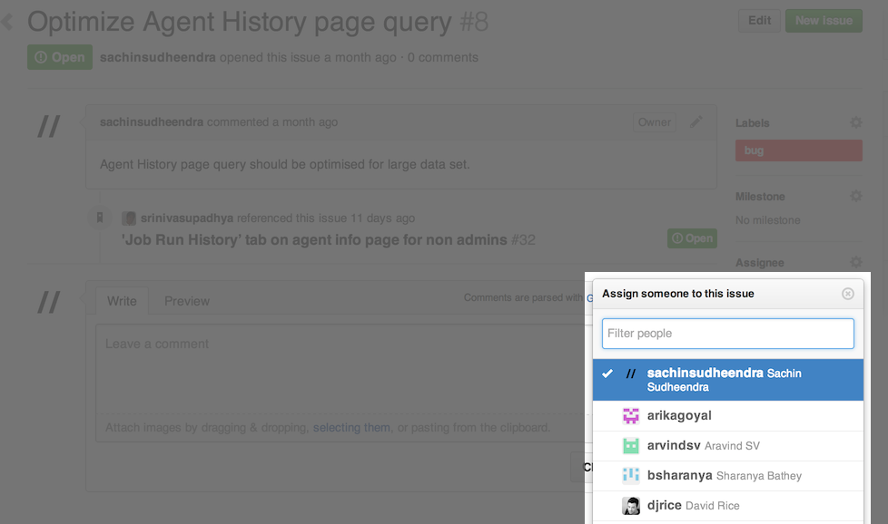

If your development environment is not set up, please refer to Setting up your development environment for the steps to set up the Go development environment.
Upon choosing a bug to fix, you should assign the bug to yourself.

As a demonstration, let us assume a use case of changing the case of one of the header links, namely PIPELINES. The task at hand would be,
As a user I would like to change the case of the header link, i.e., PIPELINES to pipelines So that I can demonstrate how to make changes in Go.
Below are a set of steps that one would follow to achieve this
Use an IDE to open the codebase. In our case, we use IntelliJ IDEA Community.
Locate the rspec file for the intended change. In our case, the header links are present in a file at server/webapp/WEB-INF/rails/app/views/shared/_application_nav.html.erb. By the convention that Go follows, the equivalent rspec for the views are present under server/webapp/WEB-INF/rails/spec/views/shared/_application_nav_html_spec.rb
Identify the spec which tests this behaviour, or in our case, the view markup.
We expect every commit to have reasonable tests to indicate the intent. For example, since this happens to be a change on the Rails side, you'd be expected to write/modify an rspec.
describe :header do
before :each do
template.stub!(:url_for_path).and_return('url_for_path')
template.stub!(:url_for).and_return('url_for')
template.stub!(:can_view_admin_page?).and_return(true)
end
it 'should have the header links' do
render :partial => "shared/application_nav.html.erb"
assert_header_values = {'recent-activity' => 'PIPELINES', 'environments' => 'ENVIRONMENTS', 'agents' => 'AGENTS', 'admin' => 'ADMIN'}
response.body.should have_tag("ul.tabs") do
assert_header_values.each do |key, value|
with_tag("li#cruise-header-tab-#{key}") do
with_tag("a", value)
end
end
end
end
end
diff --git a/server/webapp/WEB-INF/rails/spec/views/shared/_application_nav_html_spec.rb b/server/webapp/WEB-INF/rails/spec/views/shared/_application_nav_html_spec.rb
index 8f577f3..c523e89 100644
--- a/server/webapp/WEB-INF/rails/spec/views/shared/_application_nav_html_spec.rb
+++ b/server/webapp/WEB-INF/rails/spec/views/shared/_application_nav_html_spec.rb
@@ -38,7 +38,7 @@ describe "/shared/_application_nav.html.erb" do
render :partial => "shared/application_nav.html.erb"
- assert_header_values = {'recent-activity' => 'PIPELINES', 'environments' => 'ENVIRONMENTS', 'agents' => 'AGENTS', 'admin' => 'ADMIN'}
+ assert_header_values = {'recent-activity' => 'pipelines', 'environments' => 'ENVIRONMENTS', 'agents' => 'AGENTS', 'admin' => 'ADMIN'}
response.body.should have_tag("ul.tabs") do
Run spec to assert that it fails.
~/projects/go $ RAILS_ENV=test b cruise:rails:spec_server test=no
~/projects/go $ cd server/webapp/WEB-INF/rails
____INF/rails $ ~/projects/go/tools/jruby/bin/jruby script/spec ~/projects/go/server/webapp/WEB-INF/rails/spec/views/shared/_application_nav_html_spec.rb -X
Fix the failing spec to match the expectation. In our use case, because localization in Go uses the localize.xml file to interpolate string values, we will make appropriate changes in that file.
diff --git a/server/webapp/localize.xml b/server/webapp/localize.xml
index 5fc978c..e520f7c 100755
--- a/server/webapp/localize.xml
+++ b/server/webapp/localize.xml
- <entry key="PIPELINES">PIPELINES</entry>
+ <entry key="PIPELINES">pipelines</entry>
localize.xml file.)Once you are ready with the fix, you can submit your fix to the Go Team by means of Github pull requests. The approval process can be seen here.
Your assigned github issue can be updated with the newly submitted pull-request details, along with other content that might help the reviewers understand your implementation better.